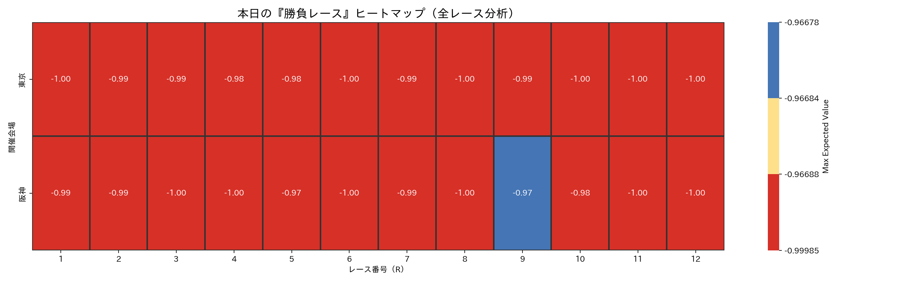
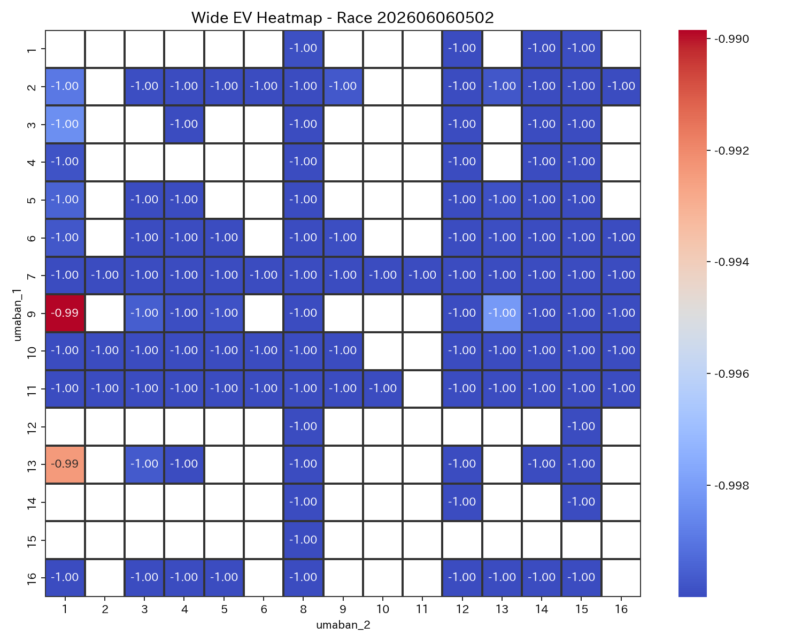
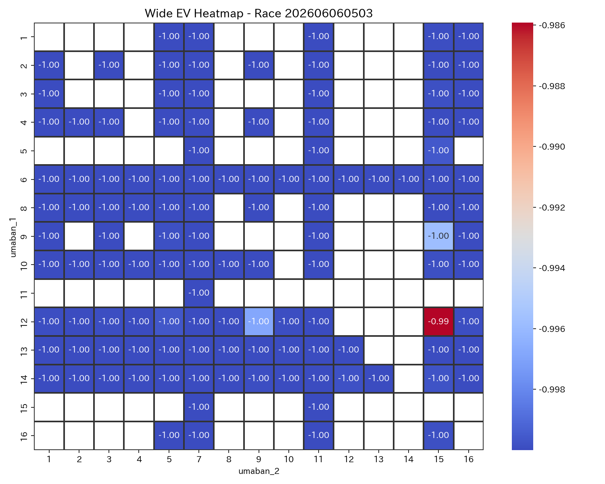
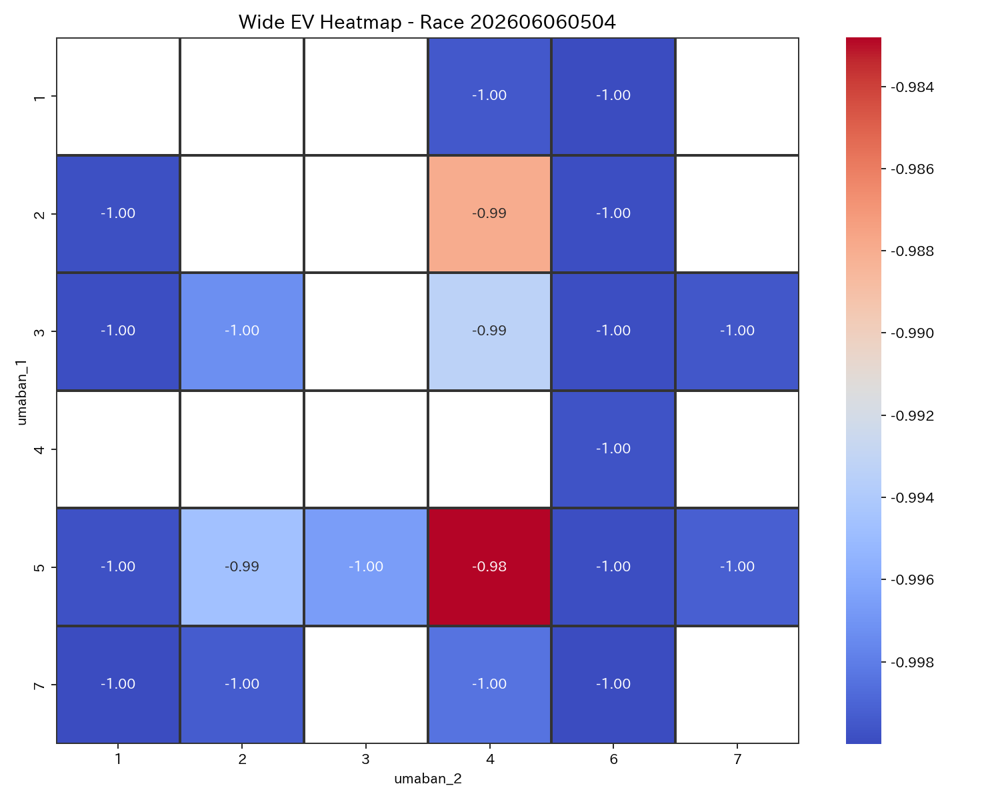
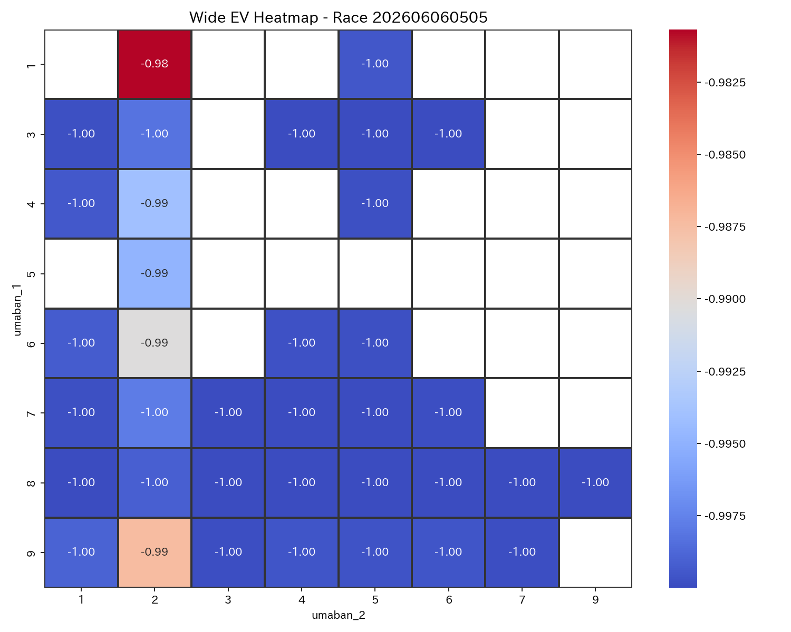
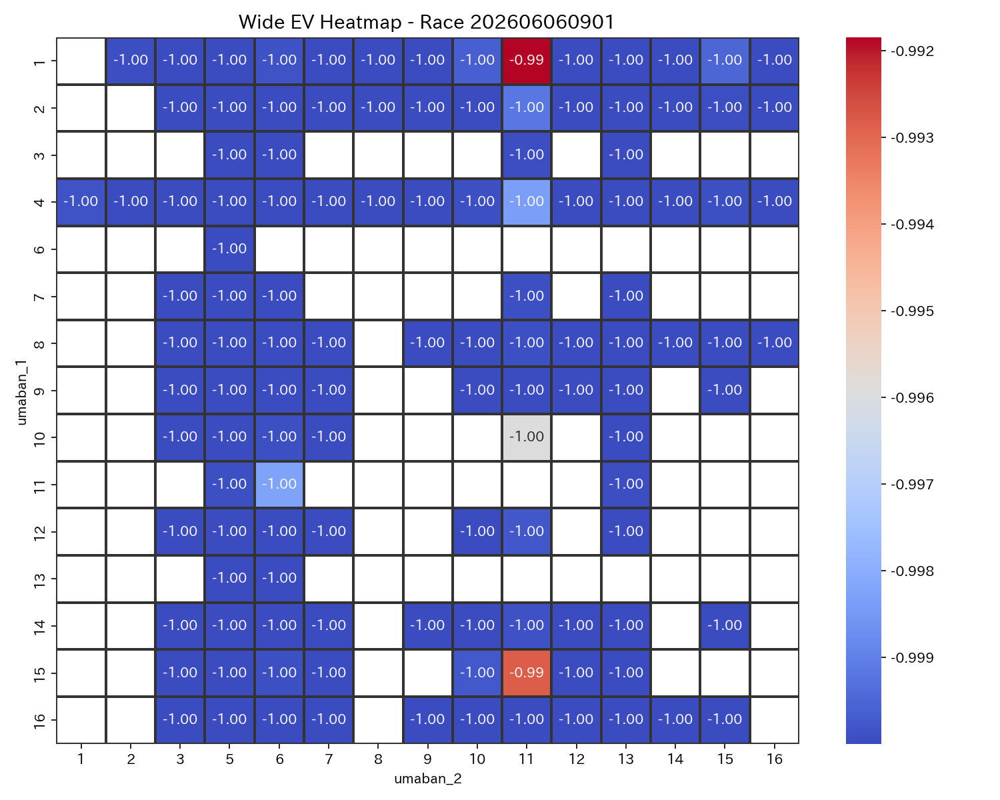
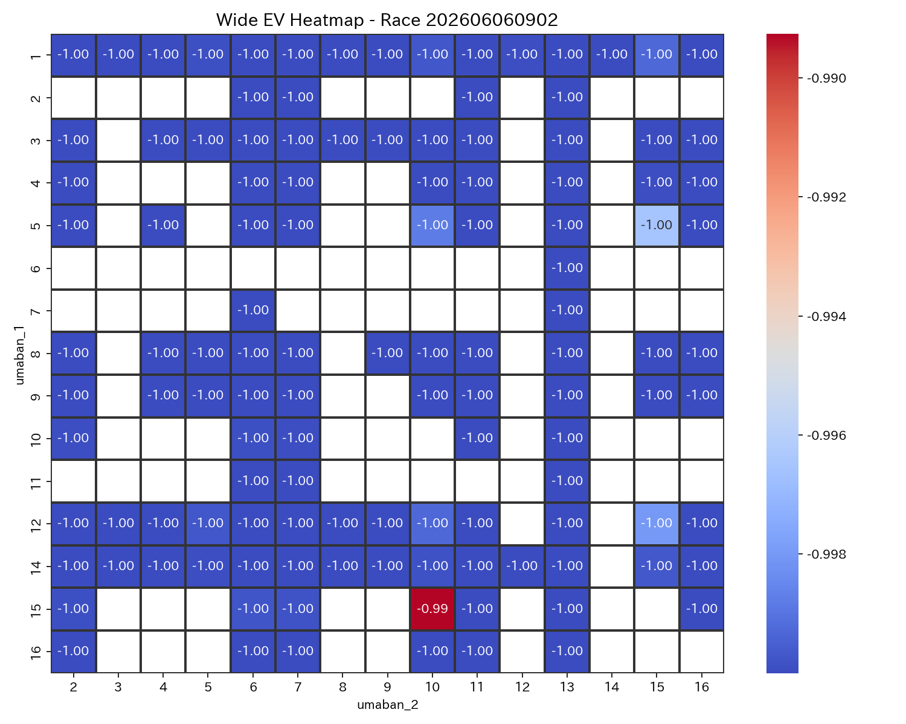
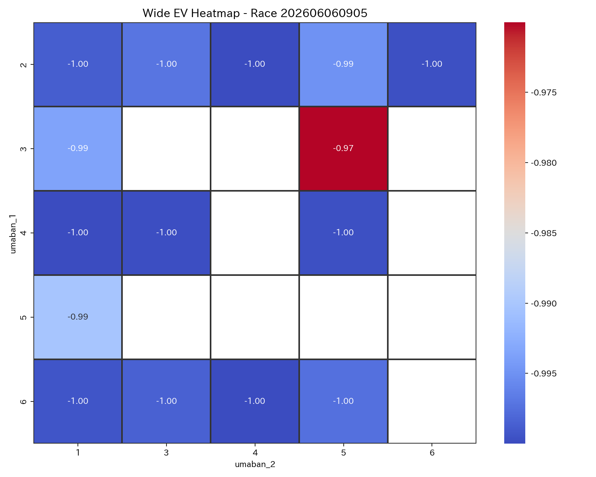
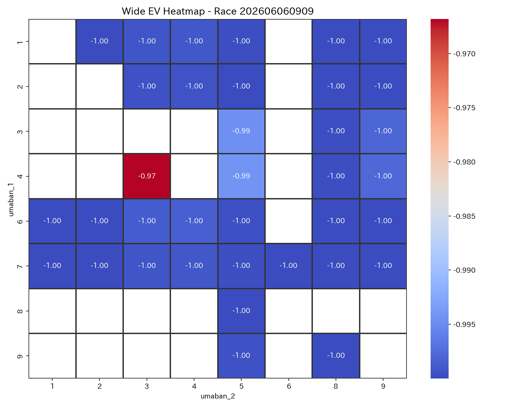
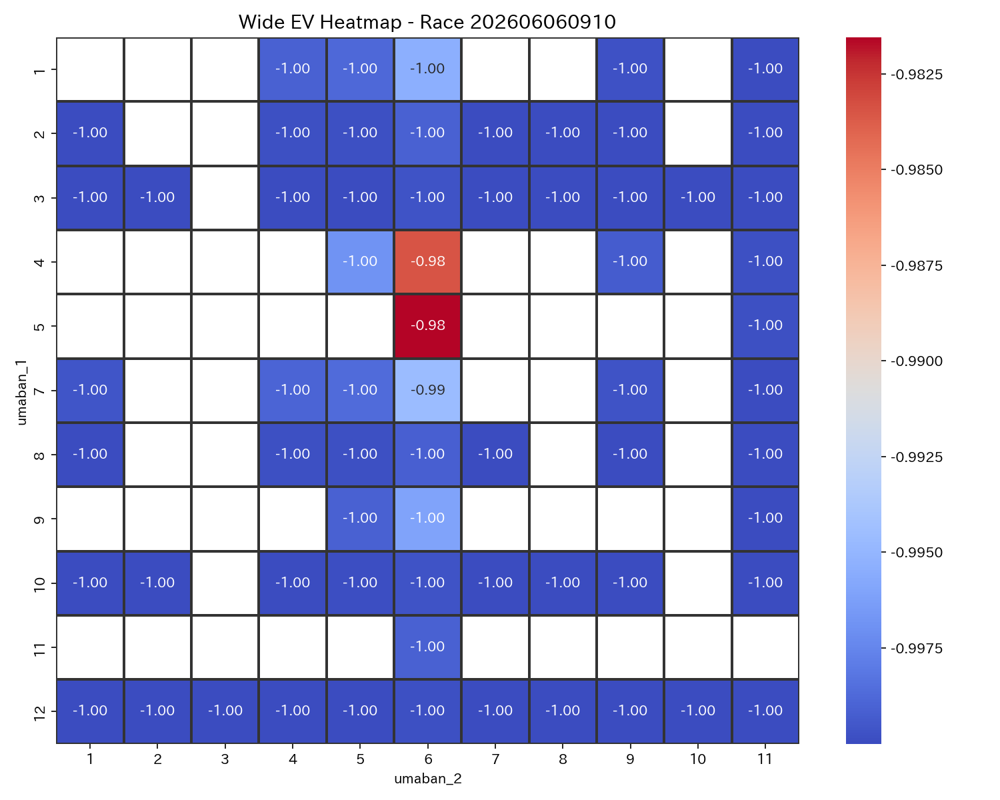

| race_label_ui | race_score | difficulty_score | comment |
|---|---|---|---|
| 阪神5R | 0.765960 | 0.350000 | 勝負度が非常に高いレースです。 堅い決着が見込まれるレースです。 本命は 3-5。 EV=-0.97, p_hit=0.010 とバランスが良好です。 次点候補は 5-1。 EV=-0.99。 適度なリスクで、標準的な賭け方が適しています。 |
| 阪神9R | 0.720900 | 0.425060 | 勝負度が高めのレースです。 比較的堅めの決着が期待できます。 本命は 4-3。 EV=-0.97, p_hit=0.011 とバランスが良好です。 次点候補は 4-5。 EV=-0.99。 適度なリスクで、標準的な賭け方が適しています。 |
| 東京5R | 0.584280 | 0.386531 | 勝負度が高めのレースです。 堅い決着が見込まれるレースです。 本命は 1-2。 EV=-0.98, p_hit=0.006 とバランスが良好です。 次点候補は 9-2。 EV=-0.99。 適度なリスクで、標準的な賭け方が適しています。 |
| 阪神10R | 0.566978 | 0.485959 | 勝負度が高めのレースです。 比較的堅めの決着が期待できます。 本命は 5-6。 EV=-0.98, p_hit=0.006 とバランスが良好です。 次点候補は 4-6。 EV=-0.98。 適度なリスクで、標準的な賭け方が適しています。 |
| 東京4R | 0.547410 | 0.311488 | やや勝負度があるレースです。 堅い決着が見込まれるレースです。 本命は 5-4。 EV=-0.98, p_hit=0.006 とバランスが良好です。 次点候補は 2-4。 EV=-0.99。 適度なリスクで、標準的な賭け方が適しています。 |
| 東京3R | 0.437678 | 0.603790 | やや勝負度があるレースです。 やや荒れやすい傾向があります。 本命は 12-15。 EV=-0.99, p_hit=0.005 とバランスが良好です。 次点候補は 9-15。 EV=-1.00。 適度なリスクで、標準的な賭け方が適しています。 |
| 東京2R | 0.388963 | 0.598761 | 勝負度は低めで、慎重に扱いたいレースです。 やや荒れやすい傾向があります。 本命は 9-1。 EV=-0.99, p_hit=0.003 とバランスが良好です。 次点候補は 13-1。 EV=-0.99。 適度なリスクで、標準的な賭け方が適しています。 |
| 阪神2R | 0.376239 | 0.595523 | 勝負度は低めで、慎重に扱いたいレースです。 やや荒れやすい傾向があります。 本命は 15-10。 EV=-0.99, p_hit=0.004 とバランスが良好です。 次点候補は 5-15。 EV=-1.00。 適度なリスクで、標準的な賭け方が適しています。 |
| 阪神1R | 0.367799 | 0.595554 | 勝負度は低めで、慎重に扱いたいレースです。 やや荒れやすい傾向があります。 本命は 1-11。 EV=-0.99, p_hit=0.003 とバランスが良好です。 次点候補は 15-11。 EV=-0.99。 適度なリスクで、標準的な賭け方が適しています。 |
| race_label_ui | bet_type | selection_ui | umaban_1 | umaban_2 | bet_score | ev | p_hit | odds | return_amount | hit_status | is_nonstarter | is_nonstarter_1 | is_nonstarter_2 |
|---|---|---|---|---|---|---|---|---|---|---|---|---|---|
| 阪神9R | wide | 4-3 | 4 | 3 | 0.944180 | -0.966812 | 0.011063 | 1.2 | 120.0 | 的中 | 0 | 0 | 0 |
| 阪神5R | wide | 3-5 | 3 | 5 | 0.885492 | -0.970022 | 0.009993 | 1.3 | 150.0 | 的中 | 0 | 0 | 0 |
| 阪神5R | wide | 5-1 | 5 | 1 | 0.459165 | -0.990235 | 0.003255 | 1.5 | 0.0 | はずれ | 0 | 0 | 0 |
| 阪神2R | wide | 15-10 | 15 | 10 | 0.401818 | -0.989258 | 0.003581 | 1.7 | 0.0 | はずれ | 0 | 0 | 0 |
| 阪神1R | wide | 1-11 | 1 | 11 | 0.345562 | -0.991845 | 0.002718 | 4.4 | 0.0 | はずれ | 0 | 0 | 0 |
| 阪神10R | wide | 5-6 | 5 | 6 | 0.602586 | -0.981548 | 0.006151 | 1.6 | 0.0 | はずれ | 0 | 0 | 0 |
| 阪神10R | wide | 4-6 | 4 | 6 | 0.562286 | -0.983459 | 0.005514 | 2.3 | 0.0 | はずれ | 0 | 0 | 0 |
| 東京5R | wide | 1-2 | 1 | 2 | 0.624453 | -0.980675 | 0.006442 | 1.4 | 140.0 | 的中 | 0 | 0 | 0 |
| 東京5R | wide | 9-2 | 9 | 2 | 0.483642 | -0.987351 | 0.004216 | 3.3 | 0.0 | はずれ | 0 | 0 | 0 |
| 東京4R | wide | 5-4 | 5 | 4 | 0.572117 | -0.982807 | 0.005731 | 1.9 | 190.0 | 的中 | 0 | 0 | 0 |
| 東京4R | wide | 2-4 | 2 | 4 | 0.464325 | -0.987918 | 0.004027 | 2.0 | 200.0 | 的中 | 0 | 0 | 0 |
| 東京3R | wide | 12-15 | 12 | 15 | 0.484520 | -0.985919 | 0.004694 | 1.7 | 170.0 | 的中 | 0 | 0 | 0 |
| 東京2R | wide | 9-1 | 9 | 1 | 0.391926 | -0.989848 | 0.003384 | 1.4 | 150.0 | 的中 | 0 | 0 | 0 |
勝負度が非常に高いレースです。 堅い決着が見込まれるレースです。 本命は 3-5。 EV=-0.97, p_hit=0.010 とバランスが良好です。 次点候補は 5-1。 EV=-0.99。 適度なリスクで、標準的な賭け方が適しています。
勝負度が高めのレースです。 比較的堅めの決着が期待できます。 本命は 4-3。 EV=-0.97, p_hit=0.011 とバランスが良好です。 次点候補は 4-5。 EV=-0.99。 適度なリスクで、標準的な賭け方が適しています。
勝負度が高めのレースです。 堅い決着が見込まれるレースです。 本命は 1-2。 EV=-0.98, p_hit=0.006 とバランスが良好です。 次点候補は 9-2。 EV=-0.99。 適度なリスクで、標準的な賭け方が適しています。
勝負度が高めのレースです。 比較的堅めの決着が期待できます。 本命は 5-6。 EV=-0.98, p_hit=0.006 とバランスが良好です。 次点候補は 4-6。 EV=-0.98。 適度なリスクで、標準的な賭け方が適しています。
やや勝負度があるレースです。 堅い決着が見込まれるレースです。 本命は 5-4。 EV=-0.98, p_hit=0.006 とバランスが良好です。 次点候補は 2-4。 EV=-0.99。 適度なリスクで、標準的な賭け方が適しています。
やや勝負度があるレースです。 やや荒れやすい傾向があります。 本命は 12-15。 EV=-0.99, p_hit=0.005 とバランスが良好です。 次点候補は 9-15。 EV=-1.00。 適度なリスクで、標準的な賭け方が適しています。
勝負度は低めで、慎重に扱いたいレースです。 やや荒れやすい傾向があります。 本命は 9-1。 EV=-0.99, p_hit=0.003 とバランスが良好です。 次点候補は 13-1。 EV=-0.99。 適度なリスクで、標準的な賭け方が適しています。
勝負度は低めで、慎重に扱いたいレースです。 やや荒れやすい傾向があります。 本命は 15-10。 EV=-0.99, p_hit=0.004 とバランスが良好です。 次点候補は 5-15。 EV=-1.00。 適度なリスクで、標準的な賭け方が適しています。
勝負度は低めで、慎重に扱いたいレースです。 やや荒れやすい傾向があります。 本命は 1-11。 EV=-0.99, p_hit=0.003 とバランスが良好です。 次点候補は 15-11。 EV=-0.99。 適度なリスクで、標準的な賭け方が適しています。